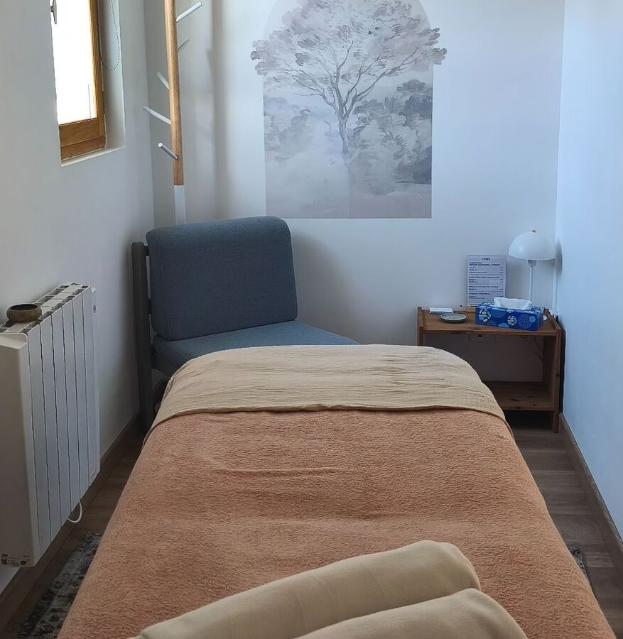
Pratique de cœur
Massage Tuina
Pressions, pétrissages, étirements et mobilisations douces. Habillé, à l’huile ou en version signature mixte avec le An Mo Bu.
1h · 1h3060 € · 80 €
Praticienne diplômée en médecine traditionnelle chinoise et massage Tuina, je vous reçois en cabinet pour des soins sur mesure. Stress, douleurs, fatigue : retrouvez votre énergie vitale grâce à un accompagnement personnalisé.
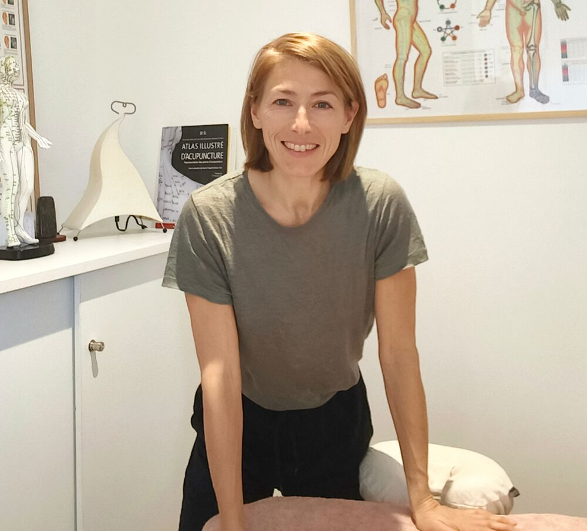
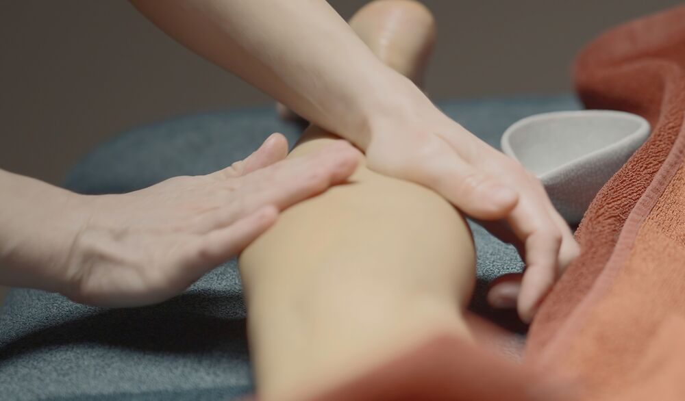
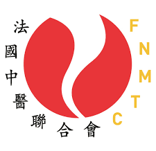
Membre de la Fédération NationaleRéaliser un travail de fond sur les déséquilibres à l’origine de vos maux, ou répondre à un besoin plus immédiat de relâchement musculaire, de détente et de ressourcement.
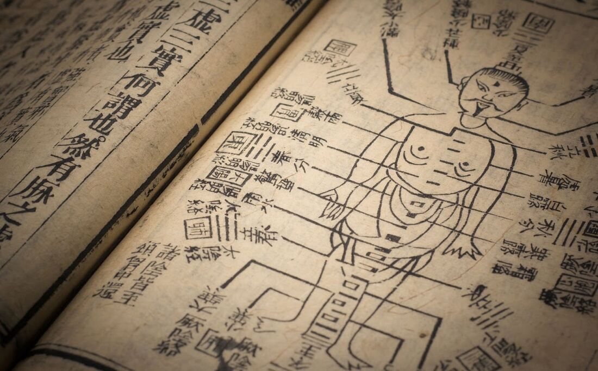
Stress, insomnies, douleurs, troubles digestifs ou liés au cycle féminin… Une séance débute par un bilan énergétique pour comprendre l’origine de vos déséquilibres.
Est-ce pour moi ? →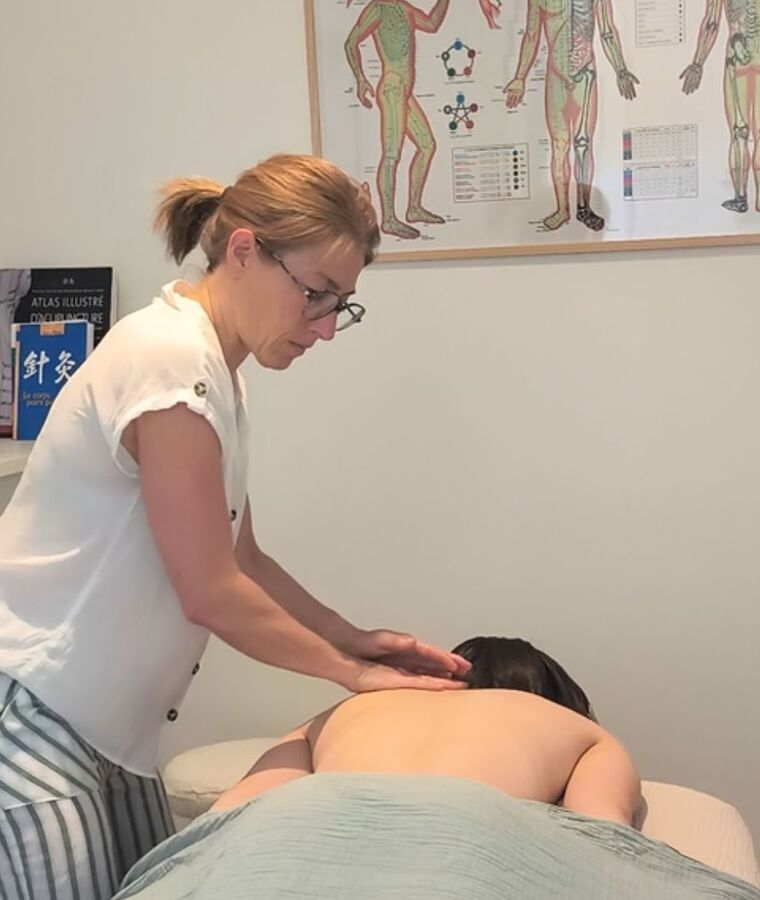
Le massage est mon domaine de prédilection, et le Tuina ma pratique de cœur. Profond et enveloppant, sur personne habillée ou à l’huile.
Choisir mon soin →Séance de 1h à 1h15 : 60 € · Séance de 1h30 à 1h45 : 80 €. Sur rendez-vous, dans mes deux cabinets.

Pressions, pétrissages, étirements et mobilisations douces. Habillé, à l’huile ou en version signature mixte avec le An Mo Bu.
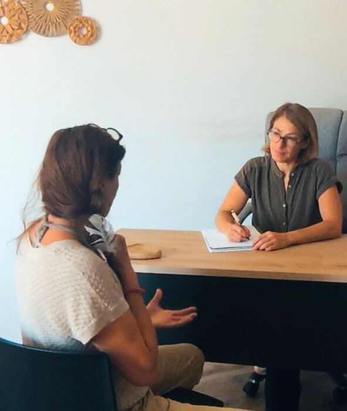
Bilan énergétique (langue, pouls chinois), puis tuina, points d’acupuncture, ventouses, moxibustion, auriculothérapie et conseils.
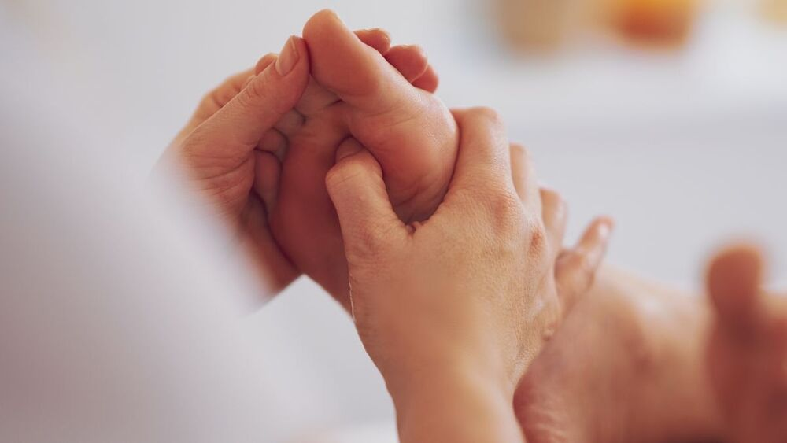
Retrouver l’équilibre et la détente profonde par les pieds.
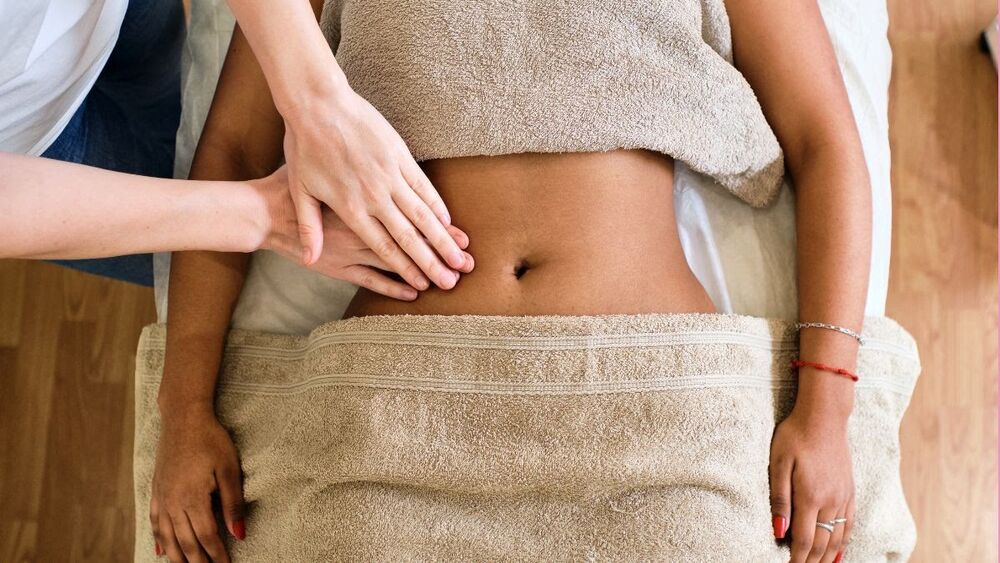
Méthode E. Vodder. Pour soulager les sensations de jambes lourdes et de rétention d’eau.
Interventions en entreprise ou à domicile pour un événement : sur devis · Offrir un bon cadeau, valable dans les deux cabinets.
Vous ne savez pas quel soin choisir, ni dans quel cabinet ? Répondez à trois questions : vous saurez quelle séance réserver, sa durée, son tarif, et vous arrivez directement sur le bon agenda.
Choisissez ce qui vous ressemble le plus aujourd’hui.
La première séance de médecine chinoise dure 1h30 : elle comprend un bilan énergétique complet.
Le cabinet dépend du jour : Roanne le vendredi, Saint-André-d’Apchon les autres jours.
En Médecine Traditionnelle Chinoise, on ne s’arrête pas à ce qui ne va pas : on cherche pourquoi.
Nous faisons le point sur votre état et vos attentes.
Votre histoire, votre sommeil, votre alimentation ; observation de la langue et prise des pouls chinois.
Massage, points d’acupuncture, ventouses, moxibustion… pour tonifier, disperser, réchauffer ou harmoniser.
Des repères simples en diététique chinoise et hygiène de vie pour prolonger les bienfaits.
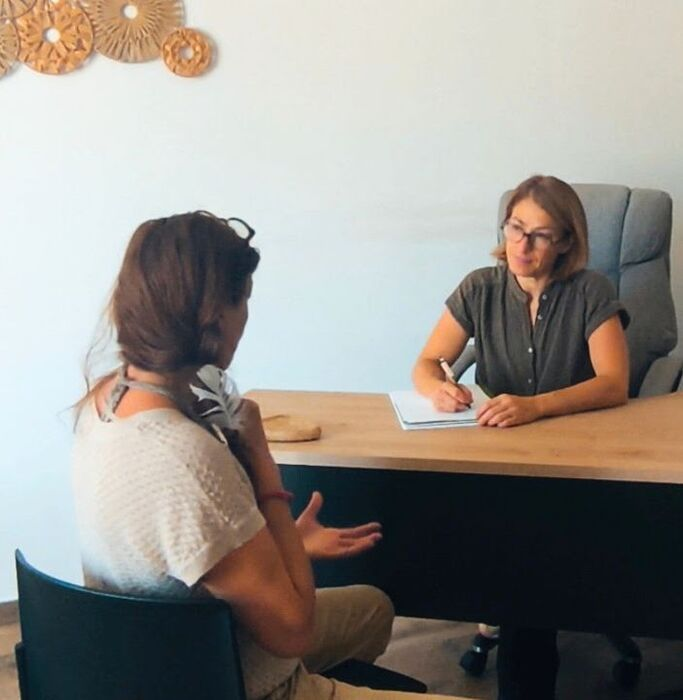
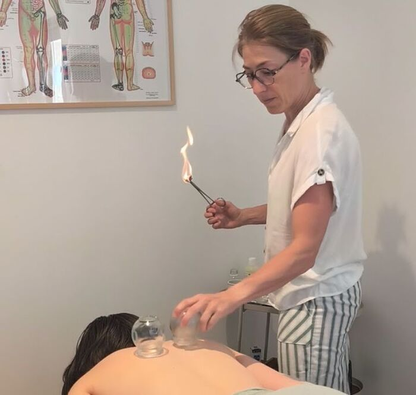
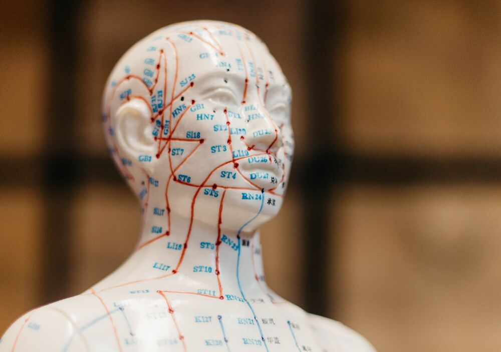
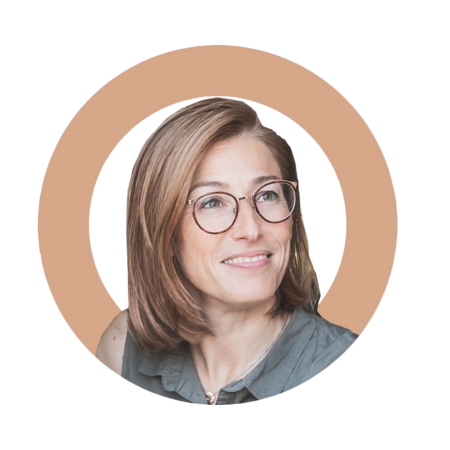
Praticienne en Médecine Traditionnelle Chinoise et éducatrice sportive diplômée d’État. Initialement formée en STAPS, je me suis lancée en 2017 dans l’apprentissage de la MTC : initiée au Tuina par Janny Bohuon, j’ai suivi pendant 2 ans les enseignements d’Audrey Collot, experte en massage Tuina, puis poursuivi ma formation avec Nuwa Formation, école agréée par la FNMTC.
« Aborder le bien-être de manière globale et considérer l’individu dans sa totalité, en prenant en compte à la fois le corps et l’esprit, est essentiel. »
Ateliers de prévention et de gestion du stress, auto-massage et massage Tuina sur votre lieu de travail. Aucun matériel ni tenue spécifique.
1h00 en groupe : des exercices de récupération à refaire au bureau ou en télétravail.
1h00 en groupe : une vraie pause de déconnexion, idéale pour lancer un séminaire.
Format court par personne : dos, nuque, épaules, bras et tête.
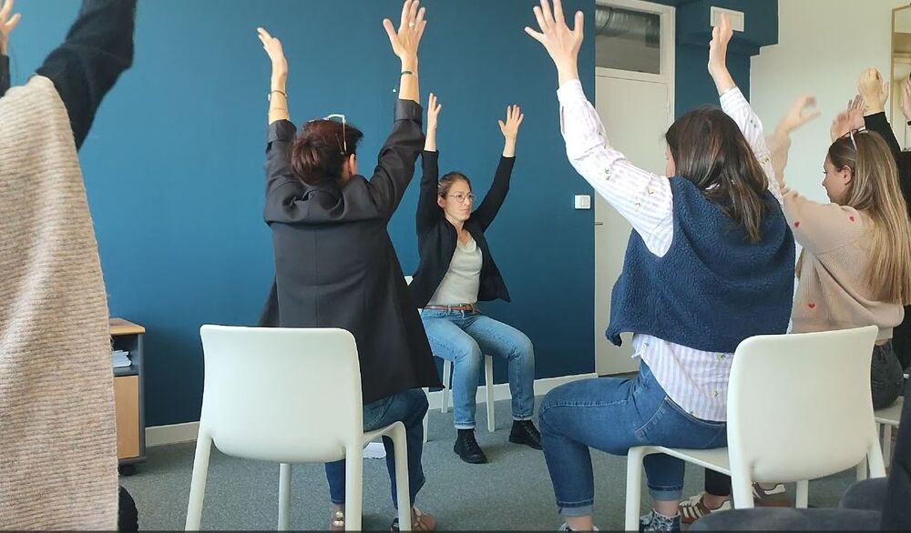
Bouger efficacement à son poste de travail — source : AG2R La Mondiale, citée sur le site actuel.
Sandrine Mastroviti offre une expérience de massage absolument formidable. Très professionnelle ; elle sait être à l’écoute et a à cœur de trouver des solutions aux maux.
Le massage Tuina que j’ai reçu m’a vraiment permis de relâcher les tensions. La séance était très complète avec les ventouses, la stimulation des points d’acupuncture et des conseils. Le cabinet de Roanne est très agréable.
Ça doit bien faire maintenant 2 ans que je vais régulièrement chez Sandrine, jamais déçu, toujours à l’écoute. Réel soulagement physique et mental après chaque rendez-vous.
Une écoute attentive et un excellent massage avec un toucher efficace. Mes douleurs aux épaules ont été durablement soulagées. Je recommande à 100 %.
Travail pro. A pris le temps, ce qui est très agréable dans ce monde où tout est minuté.
Un moment hors temps, qui agit en profondeur, tant j’avais des blocages et une grande fatigue. J’en ai retiré : apaisement, libération des tensions multiples et une énergie durable.
Extraits des témoignages publiés sur le site actuel de Tuina & Bien-Être.
Trouvez le cabinet le plus proche de chez vous. Je vous reçois sur rendez-vous.
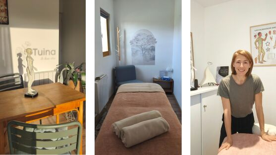
Lun · Mar · Mer · Jeu · SamAu cœur de la Côte roannaise, à quinze minutes de Roanne, dans un cadre calme, propice à la détente et au ressourcement.
331 route de la Bernarde, 42370 Saint-André-d’Apchon
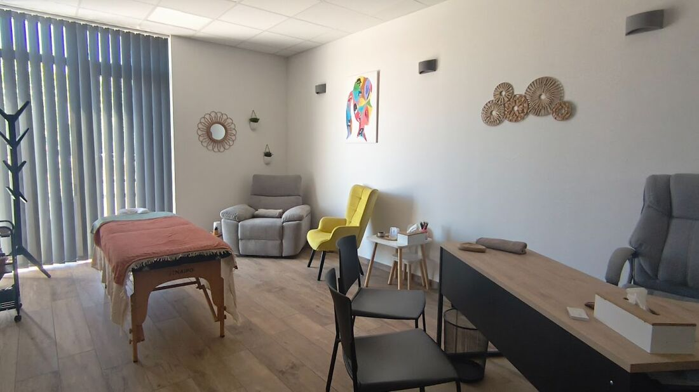
Le vendrediIdéal si vous travaillez en ville ou souhaitez profiter d’une séance en fin de semaine.
13-15 rue Waldeck Rousseau, 42300 Roanne
Non. L’intensité est adaptée à chacun : plus douce et enveloppante pour tonifier, plus appuyée pour relâcher des tensions installées. Vous pouvez toujours me dire si c’est trop fort.
La séance de MTC part d’un bilan énergétique et peut associer plusieurs techniques selon votre besoin, dont le Tuina. Le Tuina détente est un massage complet, sans bilan énergétique, pensé pour la détente et l’entretien de la santé.
Vous pouvez tout simplement venir quand vous avez envie d’un massage. Mais les bienfaits se construisent dans la durée : je conseille au minimum une séance à chaque changement de saison, l’idéal étant tous les deux mois, voire tous les mois.
Le massage Tuina traditionnel et la réflexologie se reçoivent habillé : venez en tenue souple et confortable. Pour le Tuina à l’huile ou le drainage, vous êtes invité à vous mettre en sous-vêtements ; des draps couvrent les zones non travaillées.
En espèces, par chèque ou par Wero (pas de carte bancaire). En cas d’empêchement, merci de me prévenir au moins 24 h à l’avance.
Oui, comme pour tout massage : fièvre, troubles circulatoires ou cardiaques, plaies ouvertes. En cas de doute, demandez l’avis de votre médecin.
La Médecine Traditionnelle Chinoise peut accompagner de nombreuses situations. Elle s’inscrit toujours en complément d’un suivi médical, jamais à sa place, et ne remplace en aucun cas les soins et traitements prescrits par votre médecin.
Choisissez le lieu et la durée de votre séance directement en ligne, ou appelez-moi : je vous conseillerai volontiers sur la séance la plus adaptée à votre situation.